Freeze Cooking
Cooking in cold areas
Information
What is here?
The tables below show the dish / meal, the amount of hearts it heals, and its in-game description.
How to make:
Frozen food can be created by placing / dropping ingredients for a long time on the ground in very cold areas of Hyrule, placing / dropping ingredients in cold water, animals dropping their meat on the ground after being killed in a cold area, attacking an ingredient with an icy weapon / arrow, or attacking an animal with an icy weapon / arrow while hunting.
Only meats, fish, crabs, and snails can be frozen.
Hearts:
Frozen food restores the same amount of hearts as its raw state.
Duration / Buffs:
All frozen food gives 1:00 of low level Heat Resistance.
The tables below show the dish / meal, the amount of hearts it heals, and its in-game description.
How to make:
Frozen food can be created by placing / dropping ingredients for a long time on the ground in very cold areas of Hyrule, placing / dropping ingredients in cold water, animals dropping their meat on the ground after being killed in a cold area, attacking an ingredient with an icy weapon / arrow, or attacking an animal with an icy weapon / arrow while hunting.
Only meats, fish, crabs, and snails can be frozen.
Hearts:
Frozen food restores the same amount of hearts as its raw state.
Duration / Buffs:
All frozen food gives 1:00 of low level Heat Resistance.
Meat
Meat that is frozen by placing it on the ground in a cold area
Meat that is frozen by placing it on the ground in a cold area
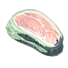
Icy Meat
Icy Meat
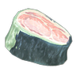
Icy Prime Meat
Icy Prime Meat
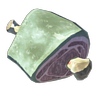
Icy Gourmet Meat
Icy Gourmet Meat
A frozen slab of animal meat. If you can manage to chew it up and swallow it, you'll restore some hearts and lower your body temperature.
High-quality, frozen animal meat. Doesn't restore many hearts, but it can lower your body temperature.
This raw gourmet meat has been frozen for easy traveling. It's kept its flavor through the freezing process. Eating it as is will provide a temporary boost to your heat resistance.
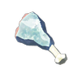
Frozen Bird Drumstick
Frozen Bird Drumstick
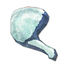
Frozen Bird Thigh
Frozen Bird Thigh
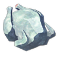
Frozen Whole Bird
Frozen Whole Bird
It's as hard as a rock but is supposedly edible. It restores a small number of hearts and has a cooling effect.
High-quality, frozen bird meat. It's so solid it looks like it could be used as a weapon. Eating it will restore some hearts and cool you down, but don't break your teeth on it.
This raw whole bird may have been frozen solid, but its flavor remains intact. Eating it will provide a temporary boost to your heat resistance.
Fish
Fish that is frozen by placing it on the ground in a cold area
Fish that is frozen by placing it on the ground in a cold area
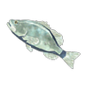
Frozen Bass
Frozen Bass
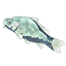
Frozen Carp
Frozen Carp
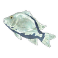
Frozen Porgy
Frozen Porgy
That's one cold fish. Eating it won't restore many hearts, but it will lower your body temperature a bit.
The crunchy, icy texture of this chilled carp is quite the delicacy. Eating it will temporarily increase your heat resistance.
This frozen porgy is the ideal snack for hiking through hot climates like the Gerudo Desert. Eating it provides a temporary boost to your heat resistance.
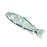
Frozen Trout
Frozen Trout
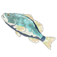
Frozen Hearty Bass
Frozen Hearty Bass
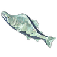
Frozen Hearty Salmon
Frozen Hearty Salmon
Being frozen has condensed the taste of fish inside this trout's body. Eating it will provide a temporary boost to your heat resistance.
This hearty bass has been frozen by cold air. Eating it will be a challenge because it's frozen solid, but if you persevere, it will temporarily increase your heat resistance.
This salmon doesn't taste quite as fishy because the excess fat has been removed. It's exceptionally cold, so eating it provides a temporary boost to heat resistance.
Seafood
Seafood that is frozen by placing it on the ground in a cold area
Seafood that is frozen by placing it on the ground in a cold area
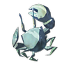
Frozen Crab
Frozen Crab
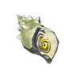
Frozen River Snail
Frozen River Snail
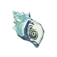
Frozen Hearty Blueshell Snail
Frozen Hearty Blueshell Snail
Doesn't provide as much companionship as an unfrozen crab, but it won't spoil during your travels. Eat it to gain a temporary boost to your heat resistance.
The distinct glow of this sneaky river snail has diminished after it's been frozen, but eating it will provide a temporary increase to your heat resistance.
It takes a skilled chef to get the meat out of this frozen hearty blueshell snail. Eating this will provide a temporary increase to your heat resistance.